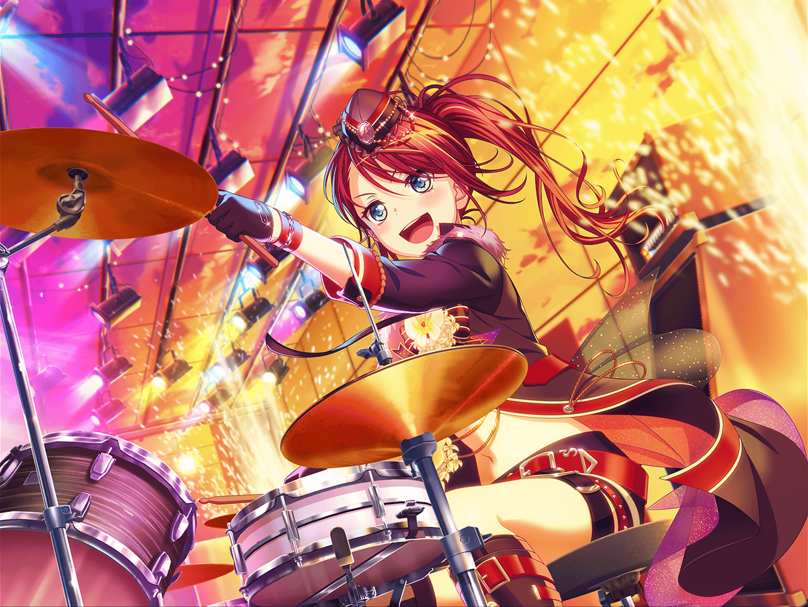

川沿いの道
まりな
あれ？ そこにいるのは……巴ちゃん？
巴
おー。まりなさん、{{userName}}さん！
お疲れさまです！
まりな
お疲れさま。
どうしたの？ カメラなんて持って。
CDジャケットに使う風景の撮影とか？
巴
いえ、そういうわけじゃないんですけど。
夕焼けに染まる街見てたら撮りたくなってさ。
なんかこう、大事だなーって思って
まりな
確かに綺麗だけど、いつも通りの見慣れた街並みだよ？
巴
そうですね
巴
……実は少し前まで、
Afterglowのみんな、ギクシャクしちゃってたんです
巴
蘭だけが成長して、どんどん先に行っちゃって。
それで足並みが揃ってないって言うか
やりづらい感じって言うか
巴
蘭に見えてるものが、アタシ達には見えてなかったんですよね。
それでちょっともめちゃって
まりな
ええっ！？ だ、大丈夫なの？
巴
あ、今はバッチリ解決済みです。
アタシ達らしく、夕日を見ながら素直に話し合ったんで！
巴
まあ、そこにたどり着くまでに結構色々あったんですけどね
まりな
そうなんだ……でも、解決してるなら良かったよ
巴
心配かけちゃってすみません。
みんな、今はすっかり『いつも通り』なんで安心してください
巴
……その『いつも通り』でいるために、蘭が変わって
アタシ達はそれに、ちょっと戸惑っただけなんですよね。
ほんと、それだけ
巴
アタシも、いつかは蘭みたいに
変わらなきゃいけない日が来るのかもしれません
巴
アタシだけじゃなくて、他の三人も
まりな
そっか。それはきっと必要なことなんだろうけど……
やっぱりちょっと不安じゃない？
巴
んー、そうですね。
完全に不安なんかないって言ったらウソになるかもしれません。
でも大丈夫だって、今なら思えるんです
巴
変わるとか変わらないとか、本当はどっちだって
いいんですよ。だってどっちも同じくらいに大事なんだから
巴
この景色も同じです。
変わるかもしれないし、変わらないかもしれない
巴
結果がどうなったとしても
アタシの大切な風景であることには変わりない、って。
だから何か形にして、残しておきたいなと思ったんです
まりな
そっかー……うん。
巴ちゃんのその考え、すっごく素敵だと思う！
巴
ほんとですか？ ありがとうございます！
まりな
そうだ！
ねえ巴ちゃん、今から三人で写真を撮らない？
まりな
もし良かったらでいいんだけど、
私達も巴ちゃんの大切な風景に入れてほしいな
巴
いいですね！ もちろん大歓迎ですよ！
巴
じゃあ、さっそく撮りましょうか。
二人とも、もっとこっちに寄ってください。
あともうちょっと……よしっ
巴
それじゃ、撮りますよ。
ハイチーズ！